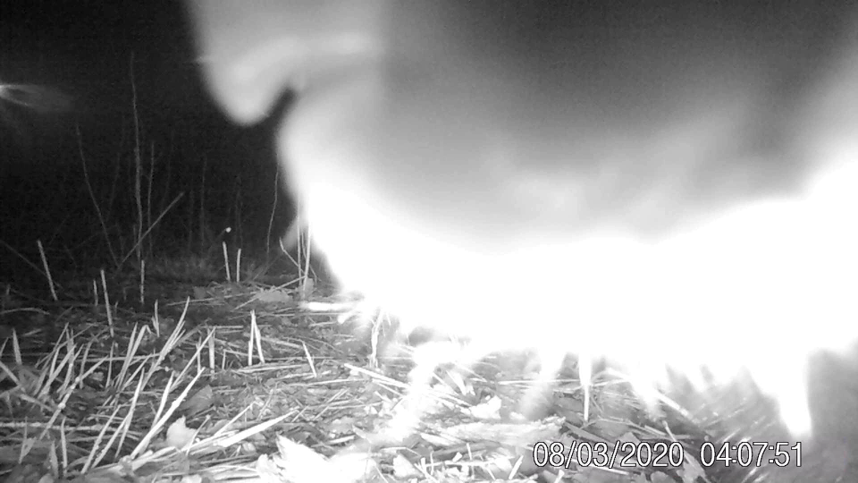

Mens vi mennesker sover, jobber, eller ser på TV, finnes det mange kule dyr som lever rundt oss uten at vi merker så mye til dem. En av disse er grevlingen.
Jeg tenker å legge ut noen av de beste blinkskuddene tatt med vitkamera i Tønsberg-området. Det er gøy å se hvilke dyr vi deler byen vår med. Dette er et nærbilde av snuta til en grevling, som kom og snuste på viltkameraet.

Viltkameraet fikk jeg til jul. Allerede første natten jeg satte det ut ved et grevlinghi, fikk jeg film av grevlingen - og en rev i tillegg!

Det er spennende å prøve å forestille seg hvor dyra vil gå forbi, og sette opp kameraet der. Reven på bildet fikk jeg bilde av ved å sette opp kameraet på et gjerde, der jeg så for meg at en rev kunne tenke seg å gå forbi.